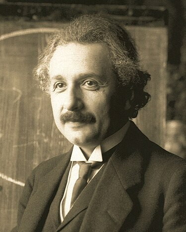

Альберт Ейнштейн
Зміст
Ранні роки

Альберт[9] Ейнштейн народився 1березня 1879 року в німецькому місті Ульмі
в незаможній
єврейській
сім'ї
Германа і Пауліни Ейнштейнів.
Початок наукової діяльності
У 1900 році Ейнштейн закінчив політехнікум, отримавши диплом викладача математики і фізики. Хоча його успішність не була зразковою, проте він серйозно зацікавився цілою низкою наук, у тому числі геологією, біологією, історією культури, літературознавством, політичною економією. Хоча наступного, 1901 року, Ейнштейн отримав громадянство Швейцарії, але аж до весни 1902 року не міг знайти постійне місце праці, лише підробляв, заміняючи вчителя у Вінтерурі. В армію його не брали через плоскостопість і розширення вен. Унаслідок відсутності заробітку Альберт Ейнштейн буквально голодував, інколи не їв декілька днів поспіль. Згодом це стало причиною хвороби печінки, що нагадувала про себе до кінця життя.